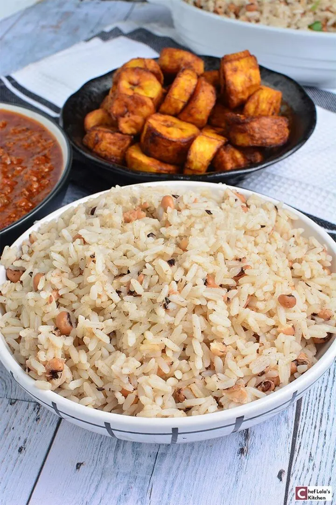

Rice and beans

Description
Rice and beans are a classic combination. As the name implies, it's rice cooked together with beans
Ingredients
- 500 gr. oblong rice ans-nigerian-way
- 250 gr. brown/black-eyed beans
- 500 ml. Tomato Stew Sauce
- two medium bulbs
- 250 gr. chicken/fish
- pepper and salt to taste
- one tsp fresh cumin or dried cumin
Steps
- Pick the beans, rinse, and cook till tender but not mushy, about 40- 45 minutes on medium-high heat.
- Add diced onions and cover with some water. Leave it to cook for about 40- 45 minutes under medium-high heat until the beans are almost done. You will know it is almost done when it is almost soft.
- Rinse the rice a couple of times until the water is clear and add the rice to the beans and add butter/oil and salt to taste. Cook until done.
- Serve with your favorite sauce, soup, or stew